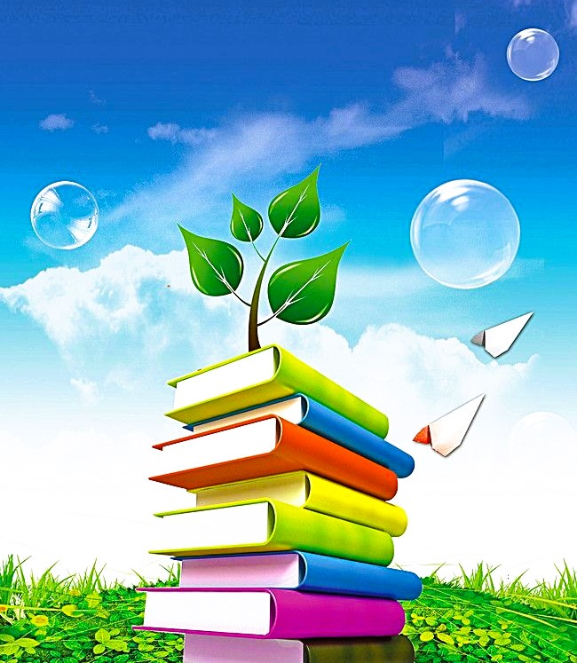
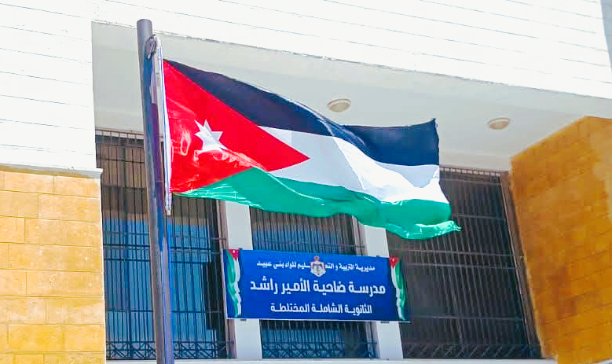
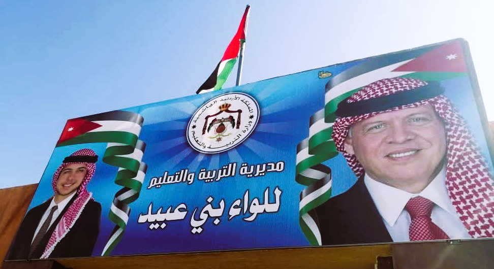

المقدمة
مرحباً بك في رحلتك العلمية المشوّقة داخل عالم الكائنات الحية في هذه المجلة التفاعلية ستكتشف أسرار النباتات التي تمنح الأرض الحياة، والحيوانات التي تملأ الكوكب تنوّعاً وحركة، والفطريات التي تعمل في الخفاء لتعيد التوازن للطبيعة، والبكتيريا الدقيقة التي تبني وتهدم في الوقت نفسه، وصولاً إلى الفيروسات الغامضة التي تقع على الحدّ الفاصل بين الحياة والجماد. من خلال محتوى غنيّ بالصور، والمعلومات الموثوقة، ستتعرّف على خصائص كل نوع، وأدواره في البيئة، وفي نهاية الرحلة، يمكنك اختبار معرفتك عبر الامتحان النهائي والحصول على شهادة إنجاز تثبت تميّزك وفهمك العميق لعالم الأحياء المدهش. استعد لاكتشاف أسرار الطبيعة بطريقة ممتعة تجمع بين التعلّم والتفاعل، لأن المعرفة تبدأ من الفضول، وتنمو بالاكتشاف!

إعداد المجلة
الطالبة: ماريه أيمن الفقية
المدرسة: ضاحية الأمير راشد الثانوية المختلطة
المديرية: لواء بني عبيد

